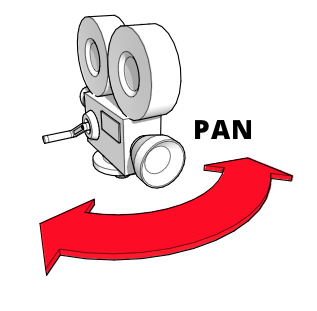
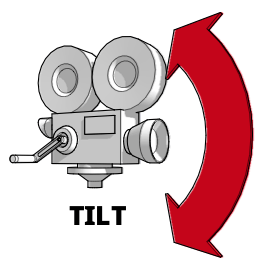
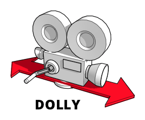
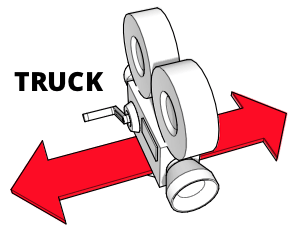
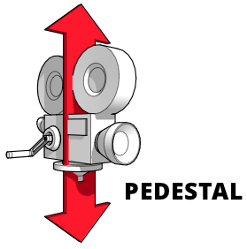
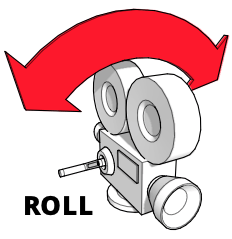

Viewpoints and viewers: Simulating cameras in WebXR
The first and most important thing to understand when considering the code to manage point-of-view and cameras in your application is this: WebXR does not have cameras. There's no magic object provided by either the WebGL or the WebXR API that represents the viewer that you can rotate and move around to automatically change what's seen on the screen. In this guide we show how use WebGL to simulate camera movements without having a camera to move. These techniques can be used in any WebGL (or WebXR) project.
Animating 3D graphics is an area of software development that brings together multiple disciplines in computer science, mathematics, art, graphic design, kinematics, anatomy, physiology, physics, and cinematography. Since we don't have a real camera, we imagine one, reproducing the effect of having a camera, without actually having the ability to move the user around the scene.
There are a few articles about the fundamental math, geometry, and other concepts behind WebGL and WebXR which may be useful to read before or while reading this one, including:
- Explaining basic 3D theory
- Matrix math for the web
- WebGL model view projection
- Geometry and reference spaces in WebXR
Ed. note: Most diagrams used in this article to show how the camera moves while performing standard movements were taken from an article on the FilmmakerIQ web site; namely, from this image which is found all over the web. We assume due to their frequent reuse that they're available under a permissive license, ownership is not certain. We hope that it's freely usable; if not, and you're the owner, please let us know and we'll find or produce new diagrams. Or, if you're happy to let us continue to use the images, please let us know so we can credit you properly!
Cameras and relative movement
When a classic live-action movie is filmed, the actors are on a set and move about the set as they perform, with one or more cameras watching their moves. The cameras may be fixed in place, but they may also be set up to move around as well, tracking the movement of the performers, dollying in and out to achieve emotional impact, and so forth.
Virtual cameras
In WebGL (and by extension, in WebXR), there is no camera object we can move and rotate, so we have to find a way to fake these movements. Since there is no camera, we have to find a way to fake it. Fortunately, physicists like Galileo, Newton, Lorentz, and Einstein have given us the principle of relativity, which states that the laws of physics have the same form in every frame of reference. That is, no matter where you're standing, the laws of physics work in the same way.
By extension, if you and another person are standing in an empty field of solid stone with nothing else visible as far as the eye can see, if you move three meters toward the other person, the result looks the same as if the other person had moved three meters toward you. There is no way for either of you to see the difference. A third party can tell the difference, but the two of you cannot. If you are a camera, you can achieve the same visual result both by moving the camera or by moving everything around the camera.
And that's our solution. Since we can't move the camera, we move the world around it. Our renderer needs to know where we imagine the camera to be, then alter the position of every visible object to simulate that position and orientation. Thus, instead of referring to an actual camera object, the term camera is used in WebGL and WebXR programming to refer to an object describing the position and viewing direction of a hypothetical viewer of the scene, whether there's an actual object present in 3D space or not.
Points of view
Since the camera is a virtual object which, rather than necessarily representing a physical object in the virtual world, represents a viewer's position and viewing direction, it's useful to think about the kinds of situation that call for the use of a camera. Gaming-related situations are listed separately since they are often a special case specific to gaming, but any of these perspectives might apply to any 3D graphics scene.
Generalized cameras
In general, virtual cameras may or may not be incorporated into physical objects within the scene. Indeed, outside the scope of 3D gaming, the odds are far more likely that the camera will not correspond with an object that appears in the scene at all. Some examples of ways 3D cameras are used:
- When rendering animation—whether for filmmaking or for use within the context of a presentation or game—the virtual camera is used just like a real-world film camera. As much as possible, standard cinematographic techniques are used, since the viewer has likely grown up watching films using those techniques, and has subconscious expectations that a film or animation will follow those methods. Deviating from them can pull the viewer out of the moment.
- In business applications, the 3D camera is used to set the apparent size and perspective when rendering things such as graphs and charts.
- In mapping applications, the camera may either be placed directly over the scene, or might use various angles to show perspective. For 3D GPS solutions, the camera is positioned to show the area around the user, with the majority of the display showing the area ahead of the user's path of motion.
- When using WebGL to accelerate 2D graphics drawing, the camera is typically placed directly above the center of the scene with the distance and field of view set to allow the entire scene to be presented.
- When accelerating bitmapped graphics, the renderer would draw the 2D image into a WebGL texture's buffer, then redraw the texture to refresh the screen. This essentially uses the texture as a backbuffer for performing multiple buffering in your 2D graphics application.
Cameras in gaming
There are many kinds of games, and as such, there are several ways in which cameras might be used in games. Some common situations include:
- In a first-person game, the camera is located within the player's avatar's head, facing in the same direction as the avatar's eyes. This way, the view presented on the player's screen or headset is what their avatar would be seeing.
- In some third-person games, the camera is located a short distance behind the player's avatar or vehicle, showing them from behind as they move through the game world. This is used in a lot of multiplayer online role-playing games, certain shooter games, and so forth. Popular examples include World of Warcraft, Tomb Raider, and Fortnite. This category also includes games where the camera is placed just over the player's shoulder.
- Some 3D games offer the ability to change your point of view, such as to look out the various windows of an aircraft in a flight simulator, or to see the views from all the security cameras within the game level (a common feature of spy and stealth-based games). This ability is also used by games offering weapons with scopes, where the view isn't quite based off the head's position in the same way anymore.
- 3D games might also provide the ability for non-players to observe the action, either by positioning an invisible avatar of sorts or by choosing a fixed virtual camera to watch from.
- In advanced 3D games, a camera or camera-like object could be used to determine what a non-player character can see, relying on the same rendering and physics engine used by player characters for non-player characters.
- In single-screen 2D games, the camera is not associated directly with the player or any other character in the game, but is instead either fixed above or next to the game play area, or follows the action as the action moves around a scrolling game world. For example, a classic arcade game such as Pac-Man takes place on a fixed game map, so the camera remains fixed a set distance above the map, always pointed straight down at the game world.
- In a side-scrolling or top-scrolling game such as Super Mario Bros., the camera moves along left and right (or up and down, or both) to ensure that the action remains visible even though the game level is much larger than the viewport.
Positioning the camera
Since there are no standard camera objects in WebGL or WebXR, we need to simulate the camera ourselves. Before we can do so, and before we can then simulate the movement of the camera, let's actually take a look at the virtual camera and how it can move, at the most fundamental level. As in all things, the position of an object in space—even if that space if virtual—can be represented using three numbers that indicate its position relative to the origin, whose position is defined to be (0, 0, 0).
There's another aspect of the spatial relationship of an object to the origin in space left to be considered: perspective. Perspective, properly applied to the objects in a scene, can take a scene that would otherwise look as flat as a typical 2D screen and make it pop as if it were truly 3D. There are several kinds of perspective; those are defined and their mathematics explained in the article WebGL model view projection. Importantly, the effect of perspective on a vector can be represented by adding a fourth component to the vector: the perspective component, called w.
The value of w is applied by dividing each of the other three components by it to get the final position or vector; that is, for a coordinate given as (x, y, z, w), the point in the 3D space is actually (x/w, y/w, z/w, 1) or (x/w, y/w, z/w). If you're not using perspective, w is always 1. In that situation, the complete coordinates for an object located at (1, 0, 3) are (1, 0, 3, 1).
But the location isn't enough to describe an object in 3D space because an object's state in space isn't only about its location, but about its rotation or facing direction, otherwise known as its orientation. The orientation can be represented using a 3D vector, which is typically normalized so that its length is 1.0. For example, if the object is facing an object located at (3, 1, -2)—that is, three meters to the right, one meter up, and two meters away from the origin point—the result is:
This can also be represented as an array:
let directionVector = [3, 1, -2];
For the purposes of performing operations involving both the coordinates and the facing direction vector, the vector needs to include the w component. The value of w is always 0 for vectors, so the aforementioned vector can also be represented using [3, 1, -2, 0] or:
WebXR automatically normalizes vectors to have a length of 1 meter; however, you may find that it makes sense to do it yourself for various reasons, such as to improve performance of calculations by not having to repeatedly perform normalization.
Once you've determined the matrix representing the combination of movements you wish the camera to make, you need to reverse it, because you're not moving the camera. Since you're actually moving everything except the camera, take the inverse of the transform matrix to get an inverse transform matrix. This inverse matrix can then be applied to the objects in the world to alter their positions and orientations to simulate the desired camera position.
This is why the XRRigidTransform object used by WebXR to represent transforms includes an inverse property. The inverse property is another XRRigidTransform object which is the inverse of the parent transform. Since the XRView representing the view has a transform property which is an XRRigidTransform providing the camera view, you can get the model view matrix—the transform matrix needed to move the world to simulate the desired camera position—like this:
let viewMatrix = view.transform.inverse.matrix;
If the library you're using accepts an XRRigidTransform object directly, you can instead get view.transform.inverse, rather than pulling out just the array representing the view matrix.
Composing multiple transforms
If your camera needs to be performing multiple transforms simultaneously, such as zooming and panning at the same time, you can multiply the transform matrices together to compose them into a single matrix that applies both changes at once. See Multiplying two matrices in the article Matrix math for the web for a clear but readable function that does this or use your preferred matrix math library such as glMatrix to do the work.
It's crucial to remember that unlike typical arithmetic, where multiplication is commutative (that is, you get the same answer whether you multiply left to right or right to left), matrix multiplication is not commutative! This is because each transform affects the position of the object and possibly the very coordinate system itself, which can dramatically change the results of the next operation performed. So you need to be careful about the order in which you apply your transforms when building your composite transform (or directly applying transforms in sequence).
Applying the transform
To apply the transform, you multiply the point or vector by the transform or composition of transforms.
This has been a very quick overview of the concepts of position in terms of physical location, orientation or facing direction, and perspective. For more detail on the subject, see the articles Geometry and reference spaces, WebGL model view projection, and Matrix math for the web.
Simulating classic cinematography
Cinematography is the art of designing, planning, and executing camera movements to create the desired look and emotion for a scene in animation or film. There are a number of terms that are helpful to understand, primarily around camera movement, as these terms are used to describe designed viewpoint changes with the virtual camera. It's also entirely possible to perform more than one of these movements at the same time; for example, you can pan the camera while also zooming in on the scene.
Keep in mind that the majority of camera movements are described relative to the camera's reference space.
The format for storing matrices is generally as a flat array in column-major order; that is, the values from the matrix are written starting with the top-left corner and moving down to the bottom, then moving over to the right a row and repeating until all values are in the array.
Thus a matrix that looks like this:
Is represented in array form like this:
let matrixArray = [a1, a2, a3, a4, a5, a6, a7, a8,
a9, a10, a11, a12, a13, a14, a15, a16];
In this array, the leftmost column contains the entries _a_₁, _a_₂, _a_₃, and _a_₄. The topmost row contains the entries _a_₁, _a_₅, _a_₉, and _a_₁₃.
Keep in mind that most WebGL and WebXR programming is done using third-party libraries which expand upon the basic functionality of WebGL by adding routines that make it much easier to perform not only core matrix and other operations, but often also to simulate these standard cinematography techniques. You should strongly consider using one instead of directly using WebGL. This guide uses WebGL directly since it's useful to understand to some extent what goes on under the hood, and to aide in the development of libraries or to help you optimize code.
Note: Even though we use phrases like "move the camera," what we're really doing is moving the entire world around the camera. This affects the way certain values work, which will be noted as they come up below.
Zooming
Among the best known camera effects is the zoom. Zooming is performed in a physical camera by altering the focal length of the lens; this is the distance between the center of the lens itself and the camera's light sensors. Thus, zooming doesn't actually involve moving the camera at all. Instead, a zoom shot changes the magnification of the camera over time to make the area of focus seem closer to or farther away from the viewer, without actually physically moving the camera. A slow move can bring a sense of movement, ease, or focus to a scene, while a rapid zoom can create a sense of anxiety, surprise, or tension.
Because a zoom does not move the camera's position, the resulting effect is unnatural. The human eye doesn't have a zoom lens on it. We make things smaller or larger by moving away from or toward them. In cinematography, that's called a dolly shot.
There are two techniques in 3D graphics that can create similar though not identical results, and whose methods apply more easily in different situations.
Zooming by adjusting field of view
You can do something more akin to a true "zoom" by altering the camera's field of view (FOV). The field of view is an angle defining the length of the arc on the entire viewable area surrounding the camera that should be visible at once. This is an effect of the focal length in a physical camera, so since there is no true camera, altering the FOV is a passable substitute.
Recall that the circumference of a circle is 2π⋅r radians (360°); as such, this is the theoretical maximum FOV. Realistically, though, not only do humans not see anywhere near that much, but viewing devices such as monitors and VR goggles tend to reduce the field of view even further. Human eyes typically have a horizontal field of view of around 135° (about 2.356 radians) and a vertical FOV of about 180° (π or around 3.142 radians).
Making the camera's FOV smaller reduces the arc that will be included in the viewport, thus enlarging that content when rendered to the view. There are differences between this and an optical zoom effect, but the result is generally close enough to get the job done.
The following function returns a projection perspective matrix that integrates the specified field of view angle as well as the given near and far clipping plane distances:
function createPerspectiveMatrix(viewport, fovDegrees, nearClip, farClip) {
const fovRadians = fovDegrees * (Math.PI / 180.0);
const aspectRatio = viewport.width / viewport.height;
const transform = mat4.create();
mat4.perspective(transform, fovRadians, aspectRatio,
nearClip, farClip);
return transform;
}
After converting the FOV angle, fovDegrees, from degrees to radians and computing the aspect ratio of the XRViewport specified by the viewport parameter, this function uses the glMatrix library's mat4.perspective() function to compute the perspective matrix.
The perspective matrix encapsulates the field of view (technically, this is the vertical field of view), aspect ratio, and the near and far clipping planes within the 4x4 matrix transform, which is then returned to the caller.
The near clipping plane is the distance in meters to a plane parallel to the display surface closer than which nothing gets drawn. Any vertices which lie on the same side of that plane as the camera are not drawn. Conversely, the far clipping plane is the distance in meters to a plane beyond which no vertices are drawn.
To zoom using a scaling factor or percentage, you can map 1x (100% of normal size) to the largest value of FOV you allow (which leads to the most content being visible), then map your maximum magnification to the maximum value of FOV you support and map corresponding values in between.
If you start each frame's rendering pass by computing the perspective matrix, you can then multiply into that matrix all the other transforms you need to apply in order to result in the frame's desired geometry. For example:
const transform = createPerspectiveMatrix(viewport, 130, 1, 100);
const translateVec = vec3.fromValues(-trackDistance, -craneDistance, pushDistance);
mat4.translate(transform, transform, translateVec);
This starts with the perspective matrix representing a 130° vertical field of view, then applies a translation that moves the camera in a manner that includes track, crane, and push movements.
Scaling transforms
Unlike a true "zoom", scaling involves multiplying each of the x, y, and z coordinate values in a position or vertex by a scaling factor for that axis. These may or may not necessarily be identical for each axis, though the closest result you can get to a zoom effect would involve using the same value for each. This would need to be applied to every vertex in the scene—ideally in the vertex shader.
If you want to scale up by a factor of 2, you need to multiply each component by 2.0. To scale down by the same amount, multiply them by -2.0. In matrix terms, this is performed using a transform matrix with scaling factored into it, like this:
let scaleTransform = [
Sx, 0, 0, 0,
0, Sy, 0, 0,
0, 0, Sz, 0,
0, 0, 0, 1
];
This matrix represents a transform that scales up or down by a factor indicated by (Sx, Sy, Sz), where Sx indicates the scaling factor along the X axis, Sy the scaling factor along the Y axis, and Sz the factor for the Z axis. If any of these values differs from the others, the result will be stretching or contraction which is different in some dimensions compared to others.
If the same scaling factor is to be applied in every direction, you can create a simple function to generate the scaling transform matrix for you:
function createScalingMatrix(f) {
return [
f, 0, 0, 0,
0, f, 0, 0,
0, 0, f, 0,
0, 0, 0, 1
];
}
With the transform matrix in hand, we apply the transform scaleTransform to the vector (or vertex) myVector:
let myVector = [2, 1, -3];
let scaleTransform = [
2, 0, 0, 0,
0, 2, 0, 0,
0, 0, 2, 0,
0, 0, 0, 1
];
vec4.transformMat4(myVector, myVector, scaleTransform);
Or, using scaling along every axis by the same factor using the createScalingMatrix() function shown above:
let myVector = [2, 1, -3];
vec4.transformMat4(myVector, myVector, createScalingMatrix(2.0));
Panning (Yawing left or right)
Panning or yaw is the rotation of the camera left to right or right to left, with its base otherwise fixed in place. The position of the camera in space does not change, only the direction in which it's looking. And that direction does not change other than horizontally. Panning is great for establishing a setting or providing a sense of scope in a vast space or on a vast object. Or just for looking left and right, like simulating the player turning their head in an immersive or VR scenario.

To do this, then, we need to rotate around the Y axis, to simulate the left and right rotation of the camera. Using the glMatrix library we've used previously, this can be performed using the rotateY() method on the mat4 class, which represents a standard 4x4 matrix. To rotate the viewpoint defined by the matrix viewMatrix by panAngle radians:
mat4.rotateY(viewMatrix, viewMatrix, panAngle);
If panAngle is positive, this transform will pan the camera to the right; a negative value for panAngle will pan to the left.
Tilting (Pitching up or down)
When you tilt or pitch the camera, you keep it fixed in space at the same coordinates while changing the direction in which it's facing vertically without altering the horizontal portion of its facing at all. It adjusts the direction it's pointing up and down. Tilting is good for capturing the scope of a tall object or scene, such as a forest or a mountain, but is also a popular way to introduce a character or locale of importance or which inspires awe. It's also of course useful for implementing support for a player looking up and down.

Thus, tilting the camera can be achieved by rotating the camera around the X axis, so that it pivots to look up and down. This can be done using the appropriate method in your matrix math library, such as the rotateX() method in glMatrix's mat4 class:
mat4.rotateX(viewMatrix, viewMatrix, angle);
Positive values for angle will tilt the camera downward, while negative values of angle will tilt upward.
Dollying (Moving in or out)
A dolly shot is one in which the entire camera is moved forward and backward. In classic filmmaking, this is typically done with the camera mounted on a track or on a moving vehicle. The resulting motion can create impressively smooth effects, especially if moving along with the person or object that's the focus of your shot.

While a dolly shot and a zoom seem like they ought to look about the same, they don't. The fact that zooming alters the camera's focal length means that the spatial relationship between the target and its surroundings doesn't change even as the target gets larger or smaller in the frame. On the other hand, a dolly shot, by actually moving the camera, replicates the sense of physical movement, causing the relationships of objects in the scene to shift as you expect while moving past them as you go toward or away from the target of the shot.
To perform a dolly operation, translate the camera view forward and backward along the Z axis:
mat4.translate(viewMatrix, viewMatrix, [0, 0, dollyDistance]);
Here, [0, 0, dollyDistance] is a vector wherein dollyDistance is the distance to dolly the camera. Since this works by moving the entire world around the camera, what really happens here is that the entire world moves along the Z axis by dollyDistance meters relative to the camera. If dollyDistance is positive, the world moves toward the user by that amount, resulting in the camera being closer to the scene. Contrariwise, negative values of dollyDistance move the world away from the user, causing the camera to appear to move backward from the target.
Trucking (Moving left or right)
Trucking using a physical camera uses the same kind of rigging as dollying, but instead of moving the camera forward and backward, it moves from left to right or vice versa. The camera doesn't rotate at all, so the focus of the shot slowly glides off the screen. This can suggest concentration, time passing, or contemplation when attempting to establish emotion in a scene. It's also used frequently in "walk-and-talk" scenes, wherein the camera glides alongside the characters and they walk through the scene.

To move the camera left and right, translate the view matrix along the X axis in the opposite direction from the desired camera movement:
mat4.translate(viewMatrix, viewMatrix, [-truckDistance, 0, 0]);
Note the vector [-truckDistance, 0, 0]. This compensates for the fact that the truck operation works by moving the world rather than the camera. By moving the entire world in the opposite direction from the direction indicated by truckDistance, we achieve the effect of moving the camera the expected direction. This way, positive values of truckDistance will move the camera to the right (by moving the world to the left) and negative values of truckDistance will move the camera to the left by moving the world to the right.
Pedestaling (Moving up or down)
A pedestal shot is one involving keeping the camera fixed horizontally relative to the floor, but moved straight up or down. Picture the camera on a pedestal (or pole) that gets taller or shorter. This is useful when tracking a subject that's getting taller or shorter, or is standing up or sitting down from a chair, or moving straight up and down.

This is similar to a crane shot, which involves moving a camera attached to a crane up and down. To perform a pedestal or crane motion, translate the view along the Y axis in the opposite direction from the direction you want to move the camera:
mat4.translate(viewMatrix, viewMatrix, [0, -pedestalDistance, 0]);
By negating the value of pedestalDistance, we compensate for the fact that we're actually moving the world rather than the camera. So positive values of pedestalDistance will move the camera up, while negative values will move it down.
Canting (Rolling left and right)
Cant (or roll) is a rotation of the camera around its roll axis; that is, the camera remains fixed in space, and remains pointed at the same location, but rotates around so that the top of the camera is pointed in a different direction.

You can visualize this by holding your arm out in front of you with your hand open, palm down. Imagine that your hand is the camera and the back of your hand represents the top of the camera. Now rotate your hand so that the "camera" is upside-down. You have just canted your hand around the roll axis. In cinematography, cant can be used to simulate various types of unsteady motion such as waves or turbulence, but can also be used for dramatic effect.
To accomplish this rotation around the Z axis using glMatrix:
mat4.rotateZ(viewMatrix, viewMatrix, cantAngle);
Combining movements
You can perform multiple movements at once, such as zooming while panning, or tilting and canting at the same time.
Translating along multiple axes
Translating along multiple axes is quite easy. Previously, we performed our translations like this:
mat4.translate(viewMatrix, viewMatrix, [-truckDistance, 0, 0]);
mat4.translate(viewMatrix, viewMatrix, [0, -pedestalDistance, 0]);
mat4.translate(viewMatrix, viewMatrix, [0, 0, dollyDistance]);
The solution here is obvious. SInce the translation is expressed as a vector providing the distance to move along each axis, we can combine them like this:
mat4.translate(viewMatrix, viewMatrix,
[-truckDistance, -pedestalDistance, dollyDistance]);
This will shift the origin of the matrix viewMatrix by the specified amount along each axis.
Rotating around multiple axes
You can also combine rotations around multiple axes into a single rotation around a quaternion representing a shared axis for the rotations. To perform the rotations separately, you use Euler angles (separate angles around each axis) to apply pitch, yaw, and roll like this:
mat4.rotateX(viewMatrix, viewMatrix, pitchAngle);
mat4.rotateY(viewMatrix, viewMatrix, yawAngle);
mat4.rotateZ(viewMatrix, viewMatrix, rollAngle);
You can instead construct a quaternion representing a combined rotation axis from the Euler angles, then rotate the matrix using multiplication, like this:
const axisQuat = quat.create();
const rotateMatrix = mat4.create();
quat.fromEuler(axisQuat, pitchAngle, yawAngle, rollAngle);
mat4.fromQuat(rotateMatrix, axisQuat);
mat4.multiply(viewMatrix, viewMatrix, rotateMatrix);
This converts the Euler angles for pitch, yaw, and roll into a quaternion representing all three rotations. This is then converted into a rotation transform matrix; then, finally, the view matrix is multiplied by the rotation transform to complete the rotations.
Representing 3D with WebXR
WebXR takes 3D graphics a step further, allowing them to be presented using special visual hardware such as goggles or a headset to create 3D graphics that appear to actually exist in three dimensions, potentially within the context of the real world (in the case of augmented reality).
In order to perceive depth, it's necessary to have two perspectives on the scene. By comparing the two views, it's possible to recognize the depth of objects and, by extension, the distance between the viewer and objects which are seen. This is why we have two eyes, spaced slightly apart. You can remind yourself of this fact by closing one eye at a time, switching back and forth between the two eyes. Notice how your left eye can see the left side of your nose but not the right, while your right eye sees the right side of your nose but not the left. That's just one of many differences that exist between what each of your eyes see.
Our brain receives two sets of data about light levels and wavelengths throughout our field of view—one from each eye. The brain uses this data to construct the scene in our minds, using the slight differences between the two perspectives to figure out depth and distance.
Rendering the scene
An XR—shorthand that encompasses both virtual reality (VR) and augmented reality (AR)—headset presents 3D imagery to us by drawing two views of the scene, slightly offset from one another just like the views obtained by our two eyes. These views are then separately fed to each eye, in order to allow them to collect the data our brain needs in order to construct a 3D image in our minds.
To do this, WebXR asks your renderer to draw the scene twice for each frame of video—once for each eye. The two views are rendered into the same framebuffer, one on the left and one on the right. The XR device then uses screens and lenses to present the left half of the produced image to our left eye and the right half to our right eye.
For example, consider a device which uses a 2560x1440 pixel frame buffer. Dividing this into two parts—half for each eye—results in each eye's view being drawn at a resolution of 1280x1440 pixels. Here's what that looks like conceptually:

Your code tells the WebXR engine that you want to provide the next animation frame by calling the XRSession method requestAnimationFrame(), providing a callback function that renders a frame of animation. When the browser needs you to render the scene, it invokes the callback, providing as input parameters the current time and an XRFrame encapsulating the data needed to render the correct frame.
This information includes the XRViewerPose describing the position and facing direction of the viewer within the scene as well as a list of XRView objects, each representing one perspective on the scene. In current WebXR implementations, there will never be more than two entries in this list: one describing the position and viewing angle of the left eye and another doing the same for the right. You can tell which eye a given XRView represents by checking the value of its eye property, which is a string whose value is left or right (a third possible value, none, theoretically may be used to represent another point of view, but support for this is not entirely available in the current API).
Example frame callback
A fairly basic (but typical) callback for rendering frames might look like this:
function myAnimationFrameCallback(time, frame) {
const adjustedRefSpace = applyPositionOffsets(xrReferenceSpace);
const pose = frame.getViewerPose(adjustedRefSpace);
animationFrameRequestID = frame.session.requestAnimationFrame(myAnimationFrameCallback);
if (pose) {
const glLayer = frame.session.renderState.baseLayer;
gl.bindFramebuffer(gl.FRAMEBUFFER, glLayer.framebuffer);
CheckGLError("Binding the framebuffer");
gl.clearColor(0, 0, 0, 1.0);
gl.clearDepth(1.0);
gl.clear(gl.COLOR_BUFFER_BIT | gl.DEPTH_BUFFER_BIT);
CheckGLError("Clearing the framebuffer");
const deltaTime = (time - lastFrameTime) * 0.001;
lastFrameTime = time;
for (const view of pose.views) {
const viewport = glLayer.getViewport(view);
gl.viewport(viewport.x, viewport.y, viewport.width, viewport.height);
CheckGLError(`Setting viewport for eye: ${view.eye}`);
myRenderScene(gl, view, sceneData, deltaTime);
}
}
}
The callback begins by calling a custom function, applyPositionOffsets(), which takes a reference space and applies to its transform matrix any changes that need to be made to take into account things such as user inputs from devices not controlled by WebXR, such as the keyboard and mouse. The adjusted XRReferenceSpace returned by this function is then passed into the XRFrame method getViewerPose() to get the XRViewerPose representing the viewer's position and viewing angle.
Next, we go ahead and queue up the request to render the next frame of video, so we don't have to worry about doing it later, by calling requestAnimationFrame() again.
Now it's time to render the scene. If we did successfully obtain a pose, we get the XRWebGLLayer we need to use for rendering from the session's renderState object's baseLayer property. We bind this to WebGL's gl.FRAMEBUFFER target using the WebGLRenderingContext method gl.bindFrameBuffer().
Then we clear the framebuffer to ensure we're starting with a known state, since our renderer will not be touching every pixel. We set the clear color to opaque black using gl.clearColor() and the value to clear the depth buffer to 1.0 by calling the WebGLRenderingContext method gl.clearDepth(). Then we call the WebGLRenderingContext method gl.clear(), which clears the framebuffer (since we include gl.COLOR_BUFFER_BIT in the mask parameter) and the depth buffer (because we include gl.DEPTH_BUFFER_BIT).
Then we determine how much time has elapsed since the previous frame was rendered by comparing the frame's desired render time with the time at which the last frame was drawn. Since this value is in milliseconds, we convert it to seconds by multiplying by 0.001 (or dividing by 1000).
Now we loop over the pose's views, as found in the XRViewerPose array, views. For each view, we ask the XRWebGLLayer for the appropriate viewport to use, configure the WebGL viewport to match by passing the position and size information into gl.viewport(). This constrains rendering so that we can only draw into the portion of the framebuffer that represents the image seen by the eye identified by view.eye.
With the constraints so established and everything else we need ready, we call a custom function, myRenderScene(), to actually perform the computations and WebGL rendering to render the frame. In this case, we're passing in the WebGL context, gl, the XRView view, a sceneData object (which contains things like the vertex and fragment shaders, vertex lists, textures, and so forth), and deltaTime, which indicates how much time has passed since the previous frame, so that we know how far to advance the animation.
When this function returns, the WebGL framebuffer being used by WebXR now has in it two copies of the scene, each occupying half the frame: one for the left eye, and one for the right eye. This makes its way through the XR software and drivers into the headset, where each half is shown to the appropriate eye.